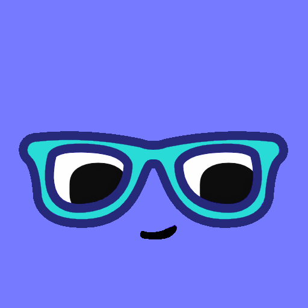

#chatagogy
The native Slack LMS that makes learning and teaching conversational.
This is the beginning. Check back soon for updates.
The native Slack LMS that makes learning and teaching conversational.
This is the beginning. Check back soon for updates.